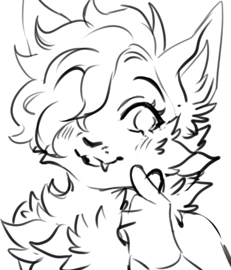

you're visitor number
on this site since Mar 13, XX26

hiii nyaa~ ꨄ︎ i'm ember! Or loafy nyaa~! whatever whatever!
i'm a 31 year old gal who makes lofi (sometimes other stuff), codes (c#/typescript/swift), and
yaps a
lot on social media whatever whatever.
sometimes i yap on my blog too nyaa!
i also love playing elden ring, pokopia, visual novels, ffxiv (when i get the chance)
i'm a moderate enthusiast of retro/nostalgia and use a heavily windows 7 themed w10 for my gaming
desktop nyaa. i have an ipod mini (gen 1) that has a lot of 00s stuff on it like
paramore/a7x/etc
oh sometimes i'm live on twitch/youtube btw whatever whatever~
 ~ loafy's little homepage ~
~ loafy's little homepage ~